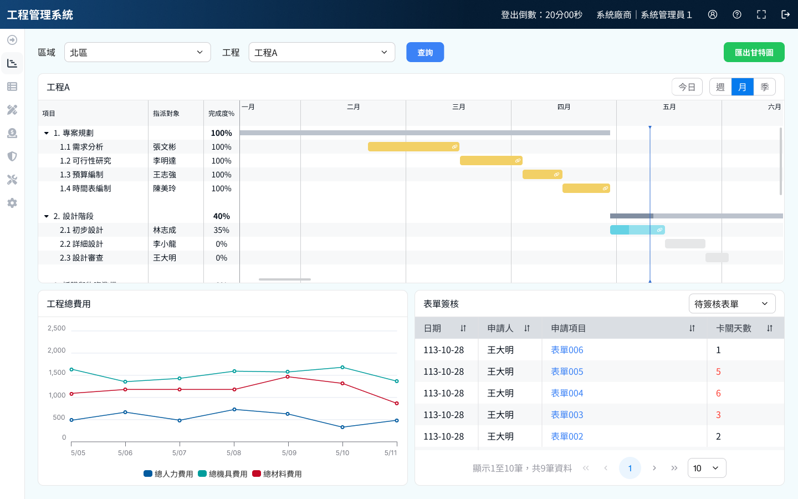
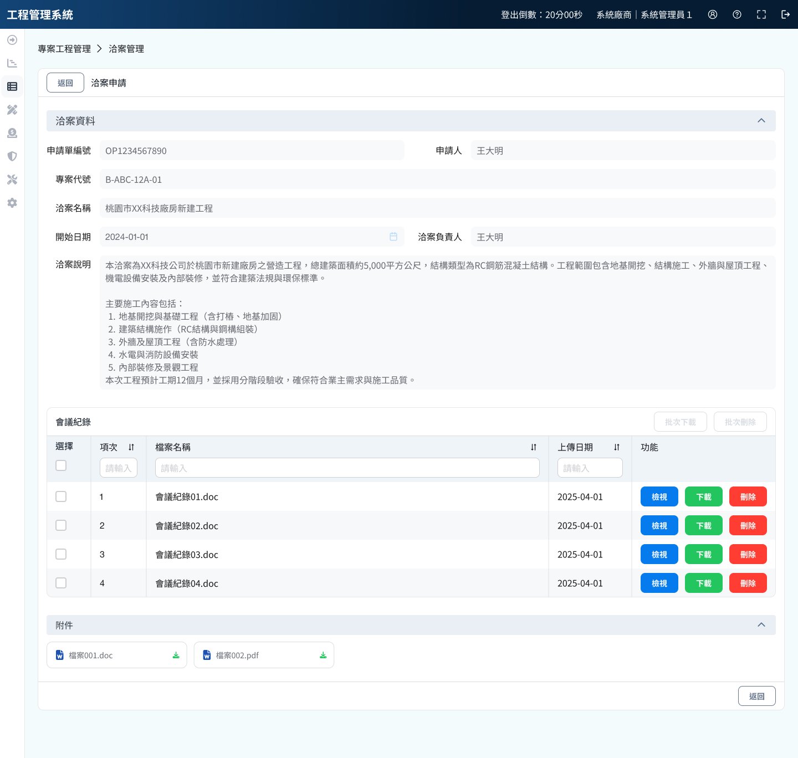
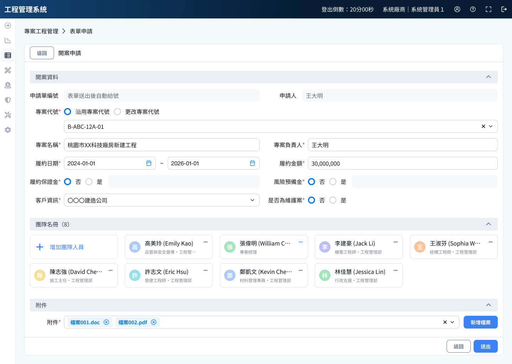
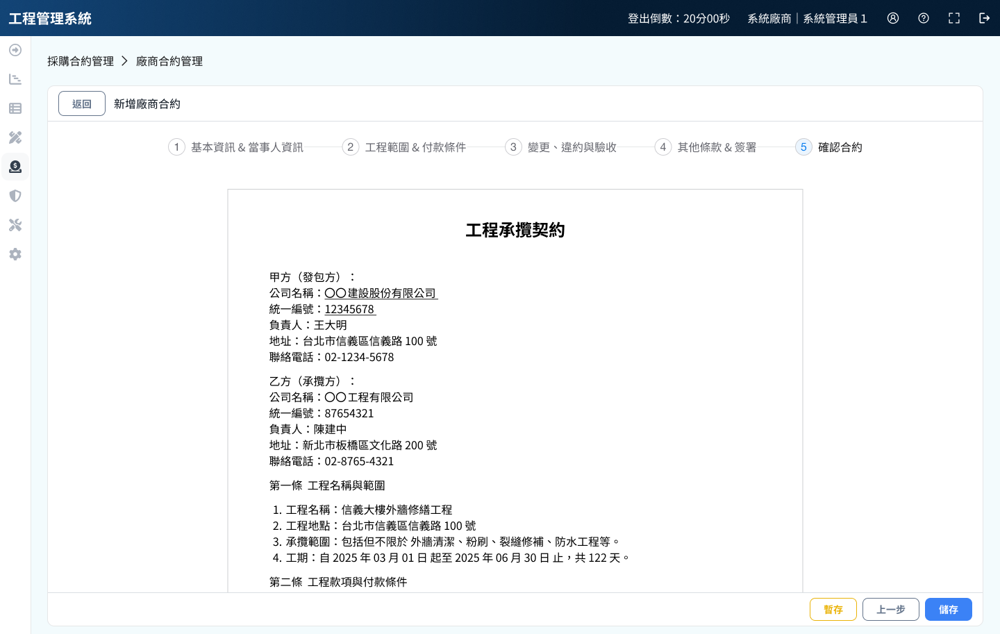

從洽案到監控串成一條線的工程管理系統
給建設公司使用的整合式工程管理平台，把一個工程從洽案、開案、請購與採購、合約、現場品管、文件簽核到監控，都串在同一個系統裡。辦公室用 Web 管理與簽核，工地人員用 App 回報現場進度，主管則透過儀表板掌握整體狀況。

系統流程
專案資料從洽案一路往下帶，不必在每個階段重填。
前期承接案件
- 01
洽案
建立洽案、撰寫會議紀錄
- 02
開案
帶入代號與會議紀錄、建立名冊
發包採購與簽約
- 03
請購與採購
請購、詢價、比價、決標
- 04
合約
帶入廠商資料、步驟式建立
執行施工與品管
- 05
現場品管
拍照回報、自主檢查表
文件簽核開案後全程
- 06
文件簽核
開案後- 建照申請
- 政府文件
- 圖說送審
施工中與完工- 消防法規
監控開案後全程
- 07
監控
進度監控辦公室- 甘特圖
- 工程費用
- 待簽核表單
工地現場監控工地- 即時影像
- 出勤人力
- 機具與材料
需求與解法
現場回報
App 與 Web 分工，兼顧現場效率與管理需求
工地人員和辦公室在意的事情不同，所以同一份資料設計成兩種介面：現場重視快速拍照回報，辦公室重視一眼掌握進度。
-

01
現場拍照回報
工地人員在 App 填寫自主檢查表並拍照上傳，不合格的結果以紅字標示。
-

02
照片與檢查項目對照
點開自主檢查表，在側邊直接看到現場照片與說明，不必離開列表。
-

03
逐項掌握檢查結果
依工項與樓層查看每份自主檢查表的完成度，各檢查項目標示待確認、已合格或不合格，新送出的以 NEW 提示。
為什麼這樣設計
工地人員需要快速回報，辦公室則需要掌握整體進度。因此，App 專注拍照與填寫檢查結果，Web 負責資料彙整與進度追蹤，讓同一筆資料依不同角色呈現所需資訊。
跨施工所監控
提升監控層級，各地施工所一覽無遺
從單一工程提升至公司層級，讓主管一次掌握各地施工狀況，並透過專案進度與施工現場兩種監控，兼顧工程進度與現場管理。
-
01
專案進度監控
甘特圖、工程費用與待簽核表單放在同一頁，一眼掌握各專案進度。
-

02
施工現場監控
從施工所清單切換各地的監視畫面，同時看到出勤人力、機具與材料。
為什麼這樣設計
不同角色關注的資訊不同：辦公室需要掌握專案進度與費用，工地則更重視現場人力與機具。因此依使用場景區分監控畫面，讓各角色快速取得所需資訊。
資料串接
資料只填一次，後續流程自動沿用
洽案、開案到合約共用同一份專案與廠商資料，後續表單自動帶入既有資訊，使用者只需確認並補充差異。
-

01
洽案時建立會議紀錄
洽案階段就把每次的會議紀錄上傳到洽案單。
-

02
成案後沿用專案代號
成案後開案可沿用專案代號；未成案則設為結案。
-

03
合約自動帶入廠商與專案
選擇廠商與專案後，統一編號等資料自動帶入，灰底為系統帶入、不需填寫。
為什麼這樣設計
專案代號與廠商資訊在不同階段反覆使用，重複填寫不僅耗時，也容易產生資料落差。因此以專案代號串聯流程，成案後延續使用，未成案則結案，讓資料管理更一致。
步驟式合約
長合約分段填寫，送出前先預覽
依不同合約內容安排填寫步驟，從基本資料、工程條件到條款與簽署，逐步完成並即時掌握填寫進度，最後可預覽完整合約。
-

01
先選擇合約類型
先選擇合約類型，系統依類型安排對應的填寫步驟。
-

02
一次只填一個步驟
點擊步驟條可直接跳到該段；依訪談需求加入暫存，填到一半也能先存。
-

03
送出前預覽完整合約
以正式合約書格式預覽，確認無誤再儲存，避免送出後才發現錯誤。
為什麼這樣設計
合約內容繁雜，且不同合約所需欄位不同，因此依合約類型彈性安排步驟，並提供暫存功能，讓使用者能分段完成，最後透過預覽降低遺漏與錯誤。
成果與過程
設計流程
這是提案階段的設計，Web 與 App 的介面都由我獨立完成，接案後才有其他同仁加入。依公司規定，設計師在提案階段不直接接觸客戶，需求由業務經理訪談後帶回。
- 業務經理帶回需求
業務經理訪談客戶，我依帶回的需求整理流程與痛點。
- 拆解流程與模組
把工程從洽案到結案拆成模組，決定哪些資料可以往下帶。
- 以 Figma 繪製提案畫面
Web 與 App 共用一套元件，設計主要流程與狀態。
- 與業務經理確認
確認範圍與優先順序，讓提案符合客戶期待。
專案優勢
過去曾參與內部系統設計，對企業流程與資料管理有一定理解，因此能快速掌握這類系統的運作邏輯，並將複雜的業務流程轉化為具體的功能與操作介面。像是議價輪次、圖說送審、建照與消防文件這些營建業流程，都能轉成對應的功能設計。
反思
專案現況
目前已離職，無法持續追蹤專案後續的開發與落地情況，因此本次成果以提案階段的設計為主，尚未經過實際上線驗證。
回顧這次專案，有兩個地方是我下次會做得更好的：
- 縮小需求轉述落差。受公司規範限制，只能透過業務經理了解客戶需求。下次會先準備訪談題綱，並蒐集客戶實際表單與現場照片，讓設計更貼近第一手情境。
- 將真實工地環境納入設計。除了流程完整，也應考慮網路不穩、戴手套操作與強光等條件，優先規劃離線暫存、加大點擊範圍與提高畫面對比。
提案能呈現設計構想，但唯有經過真實場域的使用與驗證，才能確認產品是否真正解決問題。